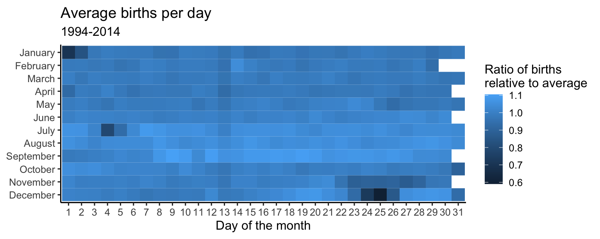

library(tidyverse)
library(colorspace) # for improved color palettes
library(scales) # for improved labels
library(ggthemes) # for scale_color_colorblind()
theme_set(theme_classic(base_size = 12))AE 15: Optimizing color spaces
Import birth data
The Social Security Administration keeps detailed records on births and deaths in the United States. For our analysis, we will use a dataset of the number of births daily in the United States from 1994-2014.1
births <- read_rds("data/births.Rds")
births# A tibble: 7,670 × 7
year month date_of_month day_of_week births date_of_month_catego…¹ weekend
<dbl> <ord> <dbl> <ord> <dbl> <fct> <lgl>
1 1994 January 1 Saturday 8096 1 TRUE
2 1994 January 2 Sunday 7772 2 TRUE
3 1994 January 3 Monday 10142 3 FALSE
4 1994 January 4 Tuesday 11248 4 FALSE
5 1994 January 5 Wednesday 11053 5 FALSE
6 1994 January 6 Thursday 11406 6 FALSE
7 1994 January 7 Friday 11251 7 FALSE
8 1994 January 8 Saturday 8653 8 TRUE
9 1994 January 9 Sunday 7910 9 TRUE
10 1994 January 10 Monday 10498 10 FALSE
# ℹ 7,660 more rows
# ℹ abbreviated name: ¹date_of_month_categoricalThe Friday the 13th effect
Friday the 13th is considered an unlucky day in Western superstition. Let’s see if fewer babies are born on the 13th of each month if it falls on a Friday compared to another week day. Specifically, we will compare the average number of births on the 13th of the month to the average number of births on the 6th and 20th of the month.
Your turn: Visualize the results using a bar chart. Emphasize the difference on Fridays compared to other weekdays.2
friday_13_births <- births |>
# only look at births on the 6, 13, and 20th
filter(date_of_month %in% c(6, 13, 20)) |>
# distinguish 6/20 from 13
mutate(not_13 = date_of_month == 13) |>
# calculate average number of births for each week day and whether or not it was the 13th
summarize(
avg_births = mean(births),
.by = c(day_of_week, not_13)
) |>
# calculate the difference in percentage
pivot_wider(
names_from = not_13,
values_from = avg_births
) |>
mutate(pct_diff = (`TRUE` - `FALSE`) / `FALSE`) |>
arrange(day_of_week)
# add code hereCreate a heatmap showing average number of births by day of year
Let’s explore the relative popularity of each calendar day for births. We will create a heatmap showing the relative ratio of births for each day of the year compared to the annual average.
avg_births_month_day <- births |>
group_by(month, date_of_month_categorical) |>
summarize(avg_births = mean(births), .groups = "drop") |>
mutate(avg_births_ratio = avg_births / mean(births$births))
avg_births_month_day# A tibble: 366 × 4
month date_of_month_categorical avg_births avg_births_ratio
<ord> <fct> <dbl> <dbl>
1 January 1 7827. 0.700
2 January 2 9356. 0.837
3 January 3 10869. 0.973
4 January 4 11064. 0.990
5 January 5 10992. 0.984
6 January 6 10942. 0.979
7 January 7 10963. 0.981
8 January 8 10656. 0.954
9 January 9 10672. 0.955
10 January 10 11072. 0.991
# ℹ 356 more rowsbirth_days_plot <- ggplot(
data = avg_births_month_day,
# By default, the y-axis will have December at the top, so use fct_rev() to reverse it
mapping = aes(x = date_of_month_categorical, y = fct_rev(month), fill = avg_births_ratio)
) +
geom_tile() +
# Add nice labels
labs(
x = "Day of the month", y = NULL,
title = "Average births per day",
subtitle = "1994-2014",
fill = "Ratio of births\nrelative to average"
) +
# Force all the tiles to have equal widths and heights
coord_equal()
birth_days_plot
Your turn: Modify the plot to use an appropriate color palette. What days have an unusually high or low number of births?
# add code hereAdd response here.
Footnotes
Collected by FiveThirtyEight.↩︎
Essentially a replication of Carl Bialik’s original chart.↩︎